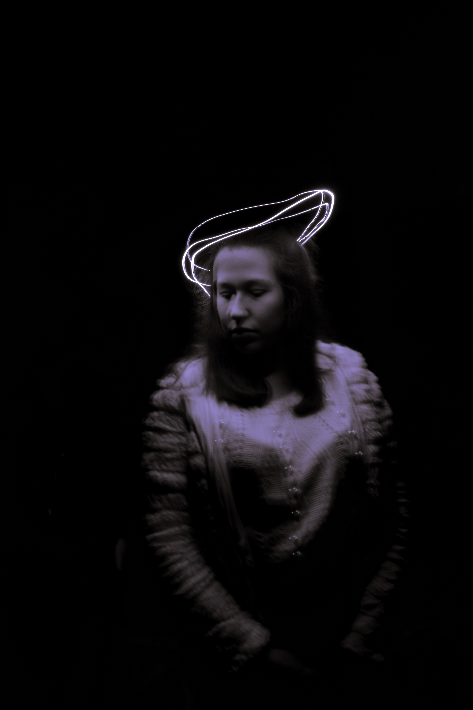
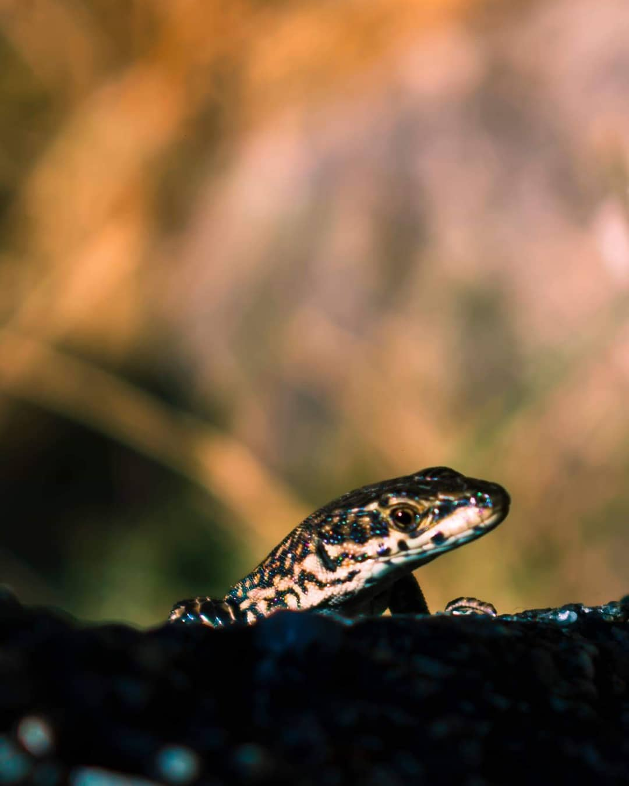
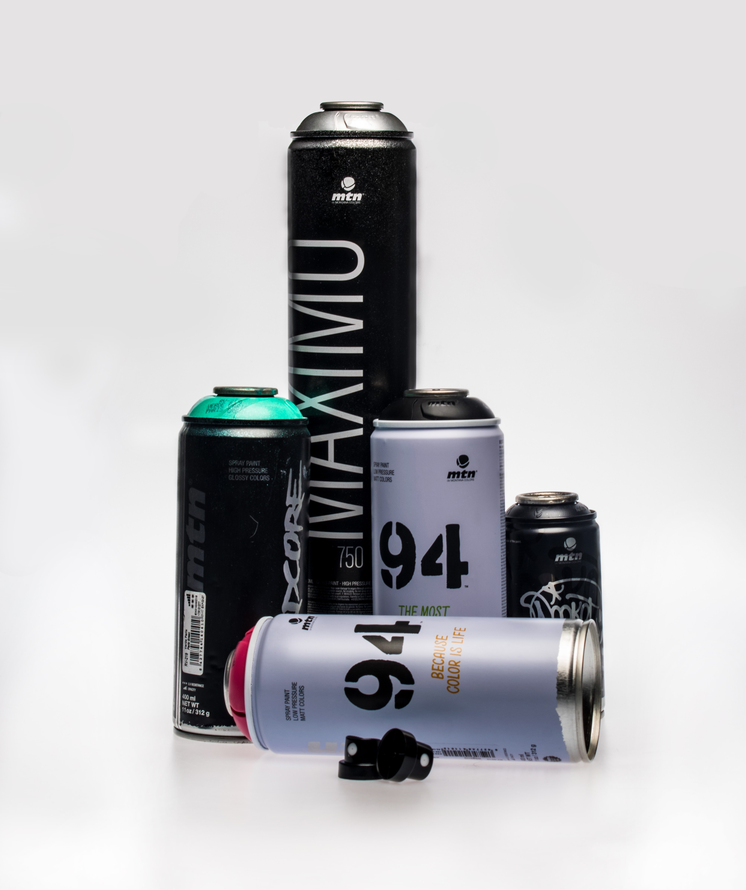

Disparos e edição
A fotografia e eu
Aqui reuno uma seleção de fotografias que tirei. Naturezas mortas, fotografia de rua, fotografia em estúdio, etc. São algumas fotos que tirei para projetos de faculdade ou apenas como hobby.

Natureza Morta - Relógios da Livraria Ler Devagar

Lx Factory

Natureza Morta - Livraria Ler Devagar

Museu de Arte Popular - Exposição MC Escher

Experiência com light painting

Passeio fotográfico - Pessoa em situação de sem-abrigo na Sé de Lisboa

Experiência com luzes

Lagartixa no Gerês

Fotografia em estúdo para projeto de faculdade

O vidro e o mar - Porto Covo

Estufa fria - Lisboa